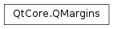

QMargins¶
Note
This class was introduced in Qt 4.6.
Synopsis¶
Functions¶
- def
__add__() - def
__add__(, m2) - def
__add__(, rhs) - def
__add__(lhs) - def
__div__(, divisor) - def
__div__(, divisor) - def
__eq__(, m2) - def
__iadd__(arg__1) - def
__iadd__(margins) - def
__idiv__(arg__1) - def
__idiv__(arg__1) - def
__imul__(arg__1) - def
__imul__(arg__1) - def
__isub__(arg__1) - def
__isub__(margins) - def
__mul__(, factor) - def
__mul__(, factor) - def
__mul__(factor) - def
__mul__(factor) - def
__ne__(, m2) - def
__sub__() - def
__sub__(, m2) - def
__sub__(, rhs) - def
bottom() - def
isNull() - def
left() - def
right() - def
setBottom(bottom) - def
setLeft(left) - def
setRight(right) - def
setTop(top) - def
top()
Detailed Description¶
The
PySide2.QtCore.QMarginsclass defines the four margins of a rectangle.QMargin defines a set of four margins; left, top, right and bottom, that describe the size of the borders surrounding a rectangle.
The
PySide2.QtCore.QMargins.isNull()function returnstrueonly if all margins are set to zero.QMargin objects can be streamed as well as compared.
-
class
PySide2.QtCore.QMargins¶ -
class
PySide2.QtCore.QMargins(QMargins) -
class
PySide2.QtCore.QMargins(left, top, right, bottom) Parameters: - left –
PySide2.QtCore.int - right –
PySide2.QtCore.int - bottom –
PySide2.QtCore.int - QMargins –
PySide2.QtCore.QMargins - top –
PySide2.QtCore.int
Constructs a margins object with all margins set to 0.
See also
Constructs margins with the given
left,top,right,bottom- left –
-
PySide2.QtCore.QMargins.bottom()¶ Return type: PySide2.QtCore.intReturns the bottom margin.
See also
-
PySide2.QtCore.QMargins.isNull()¶ Return type: PySide2.QtCore.boolReturns
trueif all margins are is 0; otherwise returns false.
-
PySide2.QtCore.QMargins.left()¶ Return type: PySide2.QtCore.intReturns the left margin.
See also
-
PySide2.QtCore.QMargins.__ne__(m2)¶ Parameters: m2 – PySide2.QtCore.QMarginsReturn type: PySide2.QtCore.bool
-
PySide2.QtCore.QMargins.__mul__(factor)¶ Parameters: factor – PySide2.QtCore.qrealReturn type: PySide2.QtCore.QMargins
-
PySide2.QtCore.QMargins.__mul__(factor) Parameters: factor – PySide2.QtCore.qrealReturn type: PySide2.QtCore.QMargins
-
PySide2.QtCore.QMargins.__mul__(factor) Parameters: factor – PySide2.QtCore.intReturn type: PySide2.QtCore.QMargins
-
PySide2.QtCore.QMargins.__mul__(factor) Parameters: factor – PySide2.QtCore.intReturn type: PySide2.QtCore.QMargins
-
PySide2.QtCore.QMargins.__imul__(arg__1)¶ Parameters: arg__1 – PySide2.QtCore.qrealReturn type: PySide2.QtCore.QMarginsThis is an overloaded function.
Multiplies each component of this object by
factorand returns a reference to it.See also
PySide2.QtCore.QMargins.operator/=()
-
PySide2.QtCore.QMargins.__imul__(arg__1) Parameters: arg__1 – PySide2.QtCore.intReturn type: PySide2.QtCore.QMarginsMultiplies each component of this object by
factorand returns a reference to it.See also
PySide2.QtCore.QMargins.operator/=()
-
PySide2.QtCore.QMargins.__add__(rhs)¶ Parameters: rhs – PySide2.QtCore.intReturn type: PySide2.QtCore.QMarginsReturns a QMargin object that is formed from all components of
margins.
-
PySide2.QtCore.QMargins.__add__(lhs) Parameters: lhs – PySide2.QtCore.intReturn type: PySide2.QtCore.QMarginsReturns a QMargin object that is formed from all components of
margins.
-
PySide2.QtCore.QMargins.__add__() Return type: PySide2.QtCore.QMargins
-
PySide2.QtCore.QMargins.__add__(m2) Parameters: m2 – PySide2.QtCore.QMarginsReturn type: PySide2.QtCore.QMarginsReturns a QMargin object that is formed from all components of
margins.
-
PySide2.QtCore.QMargins.__iadd__(arg__1)¶ Parameters: arg__1 – PySide2.QtCore.intReturn type: PySide2.QtCore.QMarginsThis is an overloaded function.
Adds the
addendto each component of this object and returns a reference to it.See also
PySide2.QtCore.QMargins.operator-=()
-
PySide2.QtCore.QMargins.__iadd__(margins) Parameters: margins – PySide2.QtCore.QMarginsReturn type: PySide2.QtCore.QMarginsAdd each component of
marginsto the respective component of this object and returns a reference to it.See also
PySide2.QtCore.QMargins.operator-=()
-
PySide2.QtCore.QMargins.__sub__(m2)¶ Parameters: m2 – PySide2.QtCore.QMarginsReturn type: PySide2.QtCore.QMarginsReturns a QMargin object that is formed by negating all components of
margins.
-
PySide2.QtCore.QMargins.__sub__(rhs) Parameters: rhs – PySide2.QtCore.intReturn type: PySide2.QtCore.QMarginsReturns a QMargin object that is formed by negating all components of
margins.
-
PySide2.QtCore.QMargins.__sub__() Return type: PySide2.QtCore.QMargins
-
PySide2.QtCore.QMargins.__isub__(arg__1)¶ Parameters: arg__1 – PySide2.QtCore.intReturn type: PySide2.QtCore.QMarginsThis is an overloaded function.
Subtracts the
subtrahendfrom each component of this object and returns a reference to it.See also
PySide2.QtCore.QMargins.operator+=()
-
PySide2.QtCore.QMargins.__isub__(margins) Parameters: margins – PySide2.QtCore.QMarginsReturn type: PySide2.QtCore.QMarginsSubtract each component of
marginsfrom the respective component of this object and returns a reference to it.See also
PySide2.QtCore.QMargins.operator+=()
-
PySide2.QtCore.QMargins.__div__(divisor)¶ Parameters: divisor – PySide2.QtCore.intReturn type: PySide2.QtCore.QMargins
-
PySide2.QtCore.QMargins.__div__(divisor) Parameters: divisor – PySide2.QtCore.qrealReturn type: PySide2.QtCore.QMargins
-
PySide2.QtCore.QMargins.__idiv__(arg__1)¶ Parameters: arg__1 – PySide2.QtCore.qrealReturn type: PySide2.QtCore.QMarginsThis is an overloaded function.
See also
PySide2.QtCore.QMargins.operator*=()
-
PySide2.QtCore.QMargins.__idiv__(arg__1) Parameters: arg__1 – PySide2.QtCore.intReturn type: PySide2.QtCore.QMarginsDivides each component of this object by
divisorand returns a reference to it.See also
PySide2.QtCore.QMargins.operator*=()
-
PySide2.QtCore.QMargins.__eq__(m2)¶ Parameters: m2 – PySide2.QtCore.QMarginsReturn type: PySide2.QtCore.bool
-
PySide2.QtCore.QMargins.right()¶ Return type: PySide2.QtCore.intReturns the right margin.
See also
-
PySide2.QtCore.QMargins.setBottom(bottom)¶ Parameters: bottom – PySide2.QtCore.intSets the bottom margin to
bottom.See also
-
PySide2.QtCore.QMargins.setLeft(left)¶ Parameters: left – PySide2.QtCore.intSets the left margin to
left.See also
-
PySide2.QtCore.QMargins.setRight(right)¶ Parameters: right – PySide2.QtCore.intSets the right margin to
right.See also
-
PySide2.QtCore.QMargins.setTop(top)¶ Parameters: top – PySide2.QtCore.intSets the Top margin to
Top.See also
-
PySide2.QtCore.QMargins.top()¶ Return type: PySide2.QtCore.intReturns the top margin.
See also
© 2018 The Qt Company Ltd. Documentation contributions included herein are the copyrights of their respective owners. The documentation provided herein is licensed under the terms of the GNU Free Documentation License version 1.3 as published by the Free Software Foundation. Qt and respective logos are trademarks of The Qt Company Ltd. in Finland and/or other countries worldwide. All other trademarks are property of their respective owners.